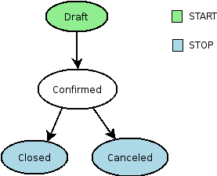
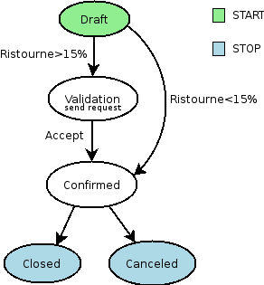
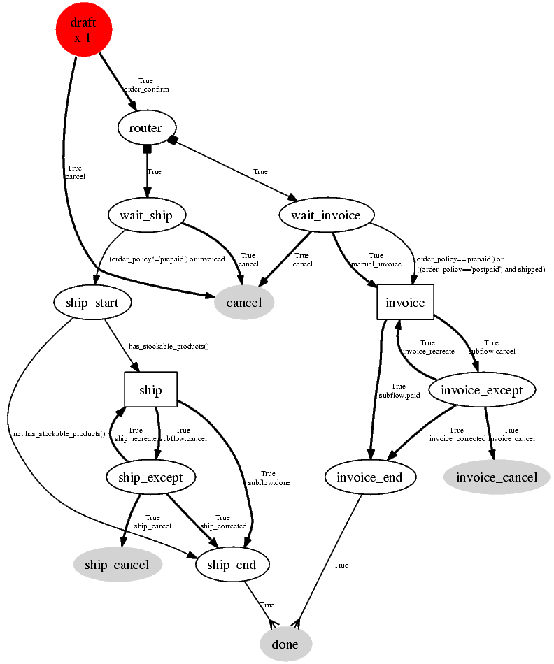
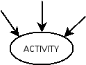

Workflow-Business Process
Introduction
The workflow system in OpenERP is a very powerful mechanism that can describe the evolution of documents (model) in time.
Workflows are entirely customizable, they can be adapted to the flows and trade logic of almost any company. The workflow system makes OpenERP very flexible and allows it to easily support changing needs without having to program new functionality.
Goals
- description of document evolution in time
- automatic trigger of actions if some conditions are met
- management of company roles and validation steps
- management of interactions between the different objects/modules
- graphical tool for visualization of document flows
To understand their utility, see the following three:
Example 1: Discount On Orders
The first diagram represent a very basic workflow of an order:

The order starts in the 'draft' state, when it is being written and has not been approved yet. When the user presses on the 'Confirm' button, the invoice is created and the order transitions to the 'CONFIRMED' state.
Then, two operations are possible:
- the order is done (shipped)
- the order is canceled
Let's suppose a company has a need not implemented in OpenERP. For example, their sales staff can only offer discounts of 15% or less. Every order having a discount above 15% must be approved by the sales manager.
This modification in the sales logic doesn't need any lines of Python code! A simple modification of the workflow allows us to take this new need into account and add the extra validation step.

The workflow is modified as above and the orders will react as requested. We then only need to modify the order form view and add a validation button at the desired location.
We could then further improve this workflow by sending a request to the sales manager when an order enters the 'Validation' state. Workflow nodes can execute object methods; only two lines of Python are needed to send a request asking the sales manager to validate or reject the order.
Example 2: A sale order that generates an invoice and a shipping order

Example 3: Account invoice basic workflow
Defining Workflow
Workflows are defined in the file server/addons/base/ir/workflow/workflow.py. The first three classes defined in this file are workflow, wkf_activity and wkf_transition. They correspond to the three types of resources necessary to describe a workflow:
- workflow : the workflow,
- wkf_activity : the activities (nodes),
- wkf_transition : the transitions between the activities.
General structure of a workflow XML file
The general structure of a workflow XML file is as follows:
<?xml version="1.0"?>
<openerp>
<data>
<record model="workflow" id=workflow_id>
<field name="name">workflow.name</field>
<field name="osv">resource.model</field>
<field name="on_create" eval='True|False' />
</record>
</data>
</openerp>
Where
- id (here "workflow_id") is a workflow identifier. Each workflow must have an unique identifier.
- name (here "workflow.name") is the name of the workflow. The name of the workflow must respect the OpenERP syntax of "dotted names".
- osv (here "resource.model") is the name of the object we use as a model [-(Remember an OpenERP object inherits from osv.osv, hence the '<field name="osv">')-].
- on_create is True if workflow.name must be instantiated automatically when resource.model is created, and False otherwise.
Example
The workflow sale.order.basic defined in addons/sale/sale_workflow.xml follows exactly this model, the code of its workflow tag is:
<record model="workflow" id="wkf_sale">
<field name="name">sale.order.basic</field>
<field name="osv">sale.order</field>
<field name="on_create" eval='True' />
</record>
Activity
Introduction
The wkf_activity class represents the nodes of workflows. These nodes are the actions to be executed.
The fields
split_mode
Possible values:
- XOR: One necessary transition, takes the first one found (default).
- OR: Take only valid transitions (0 or more) in sequential order.
- AND: All valid transitions are launched at the same time (fork).
In the OR and AND separation mode, certain workitems can be generated.
In the AND mode, the activity waits for all transitions to be valid, even if some of them are already valid. They are all triggered at the same time.
join_mode

Possible values:
- XOR: One transition necessary to continue to the destination activity (default).
- AND: Waits for all transition conditions to be valid to execute the destination activity.
kind
Possible values:
- dummy: Do nothing (default).
- function: Execute the function selected by an action.
- subflow: Execute a sub-workflow SUBFLOW_ID. The action method must return the ID of the concerned resource by the subflow. If the action returns False, the workitem disappears.
- stopall:
A sub-workflow is executed when an activity is of the type SUBFLOW. This activity ends when the sub-workflow has finished. While the sub-workflow is active, the workitem of this activity is frozen.
action
The action indicates the method to execute when a workitem comes into this activity. The method must be defined in an object which belongs to this workflow and have the following signature:
def object_method(self, cr, uid, ids):
In the action though, they will be called by a statement like:
object_method()
signal_send
This field is used to specify a signal that will be sent to the parent workflow when the activity becomes active. To do this, set the value to the name of the signal (without the signal. prefix).
flow_start
Indicates if the node is a start node. When a new instance of a workflow is created, a workitem is activated for each activity marked as a flow_start.
flow_stop
Indicates if the node is an ending node. When all the active workitems for a given instance come in the node marked by flow_stop, the workflow is finished.
::
: wkf_id
The workflow this activity belongs to.
Defining activities using XML files
The general structure of an activity record is as follows
<record model="workflow.activity" id="''activity_id''">
<field name="wkf_id" ref="''workflow_id''"/>
<field name="name">''activity.name''</field>::
<field name="split_mode">XOR | OR | AND</field>
<field name="join_mode">XOR | AND</field>
<field name="kind">dummy | function | subflow | stopall</field>
<field name="action">''(...)''</field>
<field name="signal_send">''(...)''</field>
<field name="flow_start" eval='True | False' />
<field name="flow_stop" eval='True | False' />
</record>
The first two arguments wkf_id and name are mandatory.
Examples
There are too many possibilities of activity definition to choose from using this definition. We recommend you to have a look at the file server/addons/sale/sale_workflow.xml for several examples of activity definitions.
Transition
Introduction
Workflow transitions are the conditions which need to be satisfied to move from one activity to the next. They are represented by one-way arrows joining two activities.
The conditions are of different types:
- role that the user must satisfy
- button pressed in the interface
- end of a subflow through a selected activity of subflow
The roles and signals are evaluated before the expression. If a role or a signal is false, the expression will not be evaluated.
Transition tests may not write values in objects.
The fields
act_from
Source activity. When this activity is over, the condition is tested to determine if we can start the ACT_TO activity.
act_to
The destination activity.
condition
Expression to be satisfied if we want the transition done.
signal
When the operation of transition comes from a button pressed in the client form, signal tests the name of the pressed button.
If signal is NULL, no button is necessary to validate this transition.
role_id
The role that a user must have to validate this transition.
Defining Transitions Using XML Files
The general structure of a transition record is as follows
<record model="workflow.transition" id="transition_id">
<field name="act_from" ref="activity_id'_1_'"/>
<field name="act_to" ref="activity_id'_2_'"/>
<field name="signal">(...)</field>
<field name="role_id" ref="role_id'_1_'"/>
<field name="condition">(...)</field>
<field name="trigger_model">(...)</field>
<field name="trigger_expr_id">(...)</field>
</record>
Only the fields act_from and act_to are mandatory.
Expressions
Expressions are written as in Python:
- True
- 1==1
- 'hello' in ['hello','bye']
Any field from the resource the workflow refers to can be used in these expressions. For example, if you were creating a workflow for partner addresses, you could use expressions like:
- zip==1400
- phone==mobile
User Role
Roles can be attached to transitions. If a role is given for a transition, that transition can only be executed if the user who triggered it has the required role.
Each user can have one or several roles. Roles are defined in a tree of roles, parent roles having the rights of all their children.
Example:
CEO
- Technical manager
- Lead developer
- Developers
- Testers
- Lead developer
- Sales manager
- Commercials
- ...
Let's suppose we handle our own bug database and that the action of marking a bug as valid needs the Testers role. In the example tree above, marking a bug as valid could be done by all the users having the following roles: Testers, Lead developer, Technical manager, CEO.
Error handling
As of this writing, there is no exception handling in workflows.
Workflows being made of several actions executed in batch, they can't trigger exceptions. In order to improve the execution efficiency and to release a maximum of locks, workflows commit at the end of each activity. This approach is reasonable because an activity is only started if the conditions of the transactions are satisfied.
The only problem comes from exceptions due to programming errors; in that case, only transactions belonging to the entirely completed activities are executed. Other transactions are "rolled back".
Creating a Workflow
Steps for creating a simple state-changing workflow for a custom module called mymod
Define the States of your object
The first step is to define the States your object can be in. We do this by adding a 'state' field to our object, in the _columns collection
_columns = {
...
'state': fields.selection([
('new','New'),
('assigned','Assigned'),
('negotiation','Negotiation'),
('won','Won'),
('lost','Lost')], 'Stage', readonly=True),
}
Define the State-change Handling Methods
Add the following additional methods to your object. These will be called by our workflow buttons.
def mymod_new(self, cr, uid, ids):
self.write(cr, uid, ids, {'state': 'new'})
return True
def mymod_assigned(self, cr, uid, ids):
self.write(cr, uid, ids, {'state': 'assigned'})
return True
def mymod_negotiation(self, cr, uid, ids):
self.write(cr, uid, ids, {'state': 'negotiation'})
return True
def mymod_won(self, cr, uid, ids):
self.write(cr, uid, ids, {'state': 'won'})
return True
def mymod_lost(self, cr, uid, ids):
self.write(cr, uid, ids, {'state': 'lost'})
return True
Obviously you would extend these methods in the future to do something more useful!
Create your Workflow XML file
There are three types of records we need to define in a file called mymod_workflow.xml
- Workflow header record (only one of these)
<record model="workflow" id="wkf_mymod">
<field name="name">mymod.wkf</field>
<field name="osv">mymod.mymod</field>
<field name="on_create" eval='True' />
</record>
- Workflow Activity records
These define the actions that must be executed when the workflow reaches a particular state
<record model="workflow.activity" id="act_new">
<field name="wkf_id" ref="wkf_mymod" />
<field name="flow_start" eval='True' />
<field name="name">new</field>
<field name="kind">function</field>
<field name="action">mymod_new()</field>
</record>
<record model="workflow.activity" id="act_assigned">
<field name="wkf_id" ref="wkf_mymod" />
<field name="name">assigned</field>
<field name="kind">function</field>
<field name="action">mymod_assigned()</field>
</record>
<record model="workflow.activity" id="act_negotiation">
<field name="wkf_id" ref="wkf_mymod" />
<field name="name">negotiation</field>
<field name="kind">function</field>
<field name="action">mymod_negotiation()</field>
</record>
<record model="workflow.activity" id="act_won">
<field name="wkf_id" ref="wkf_mymod" />
<field name="name">won</field>
<field name="kind">function</field>
<field name="action">mymod_won()</field>
<field name="flow_stop" eval='True' />
</record>
<record model="workflow.activity" id="act_lost">
<field name="wkf_id" ref="wkf_mymod" />
<field name="name">lost</field>
<field name="kind">function</field>
<field name="action">mymod_lost()</field>
<field name="flow_stop" eval='True' />
</record>
- Workflow Transition records
These define the possible transitions between workflow states
<record model="workflow.transition" id="t1">
<field name="act_from" ref="act_new" />
<field name="act_to" ref="act_assigned" />
<field name="signal">mymod_assigned</field>
</record>
<record model="workflow.transition" id="t2">
<field name="act_from" ref="act_assigned" />
<field name="act_to" ref="act_negotiation" />
<field name="signal">mymod_negotiation</field>
</record>
<record model="workflow.transition" id="t3">
<field name="act_from" ref="act_negotiation" />
<field name="act_to" ref="act_won" />
<field name="signal">mymod_won</field>
</record>
<record model="workflow.transition" id="t4">
<field name="act_from" ref="act_negotiation" />
<field name="act_to" ref="act_lost" />
<field name="signal">mymod_lost</field>
</record>
Add mymod_workflow.xml to __openerp__.py
Edit your module's __openerp__.py and add "mymod_workflow.xml" to the update_xml array, so that OpenERP picks it up next time your module is loaded.
Add Workflow Buttons to your View
The final step is to add the required buttons to mymod_views.xml file.
Add the following at the end of the <form> section of your object's view definition:
<separator string="Workflow Actions" colspan="4"/>
<group colspan="4" col="3">
<button name="mymod_assigned" string="Assigned" states="new" />
<button name="mymod_negotiation" string="In Negotiation" states="assigned" />
<button name="mymod_won" string="Won" states="negotiating" />
<button name="mymod_lost" string="Lost" states="negotiating" />
</group>
Testing
Now use the Module Manager to install or update your module. If you have done everything correctly you shouldn't get any errors. You can check if your workflow is installed in the menu Administration --> Customization --> Workflow Definitions.
When you are testing, remember that the workflow will only apply to NEW records that you create.
Troubleshooting
If your buttons do not seem to be doing anything, one of the following two things are likely:
- The record you are working on does not have a Workflow Instance record associated with it (it was probably created before you defined your workflow)
- You have not set the
osvfield correctly in your workflow XML file